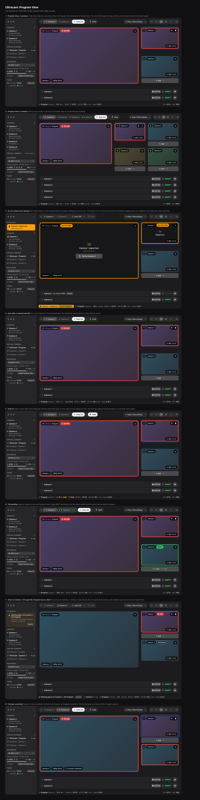
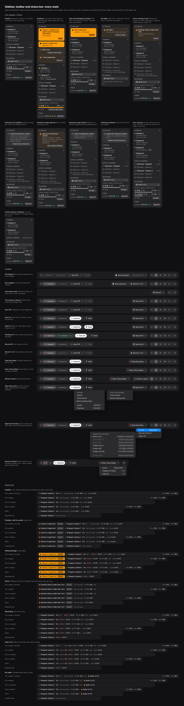
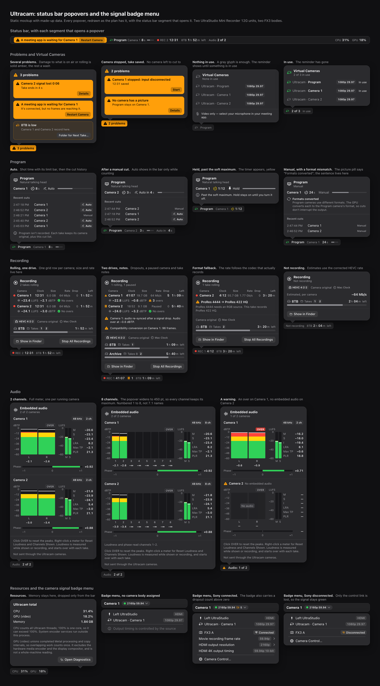
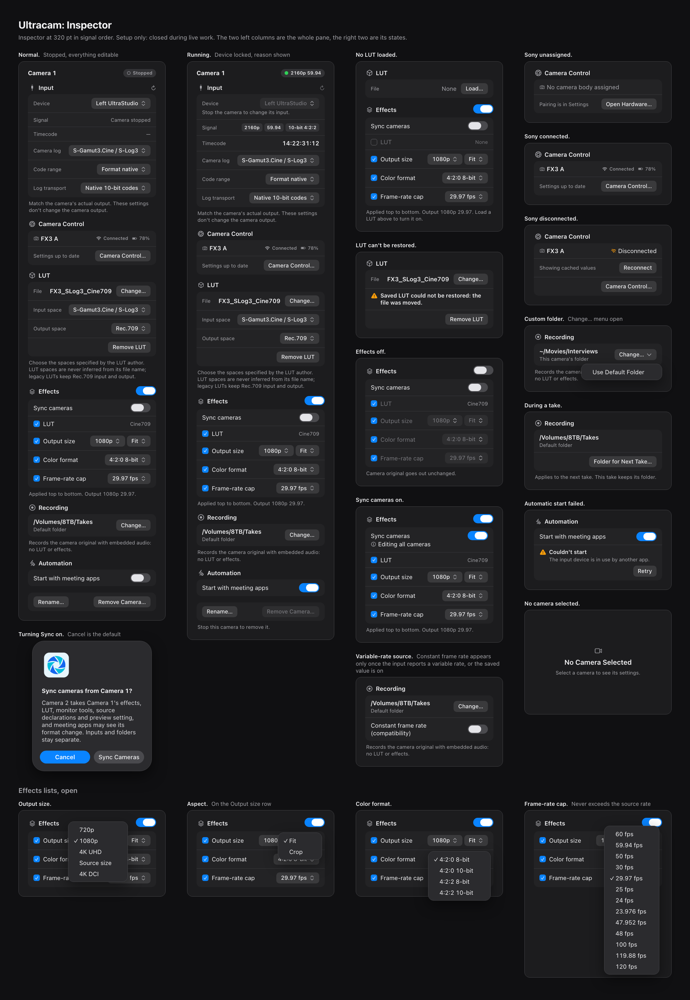
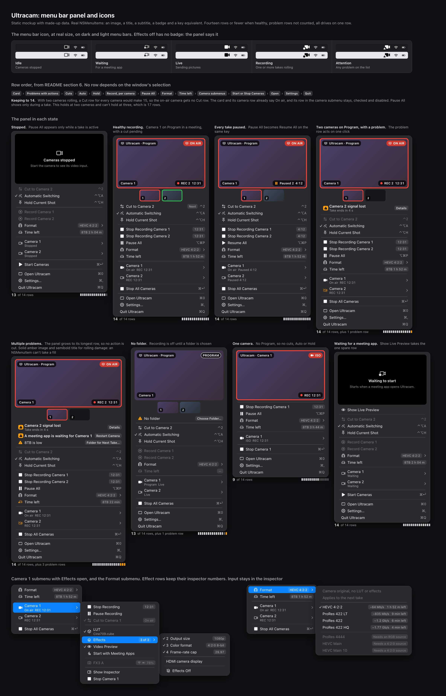
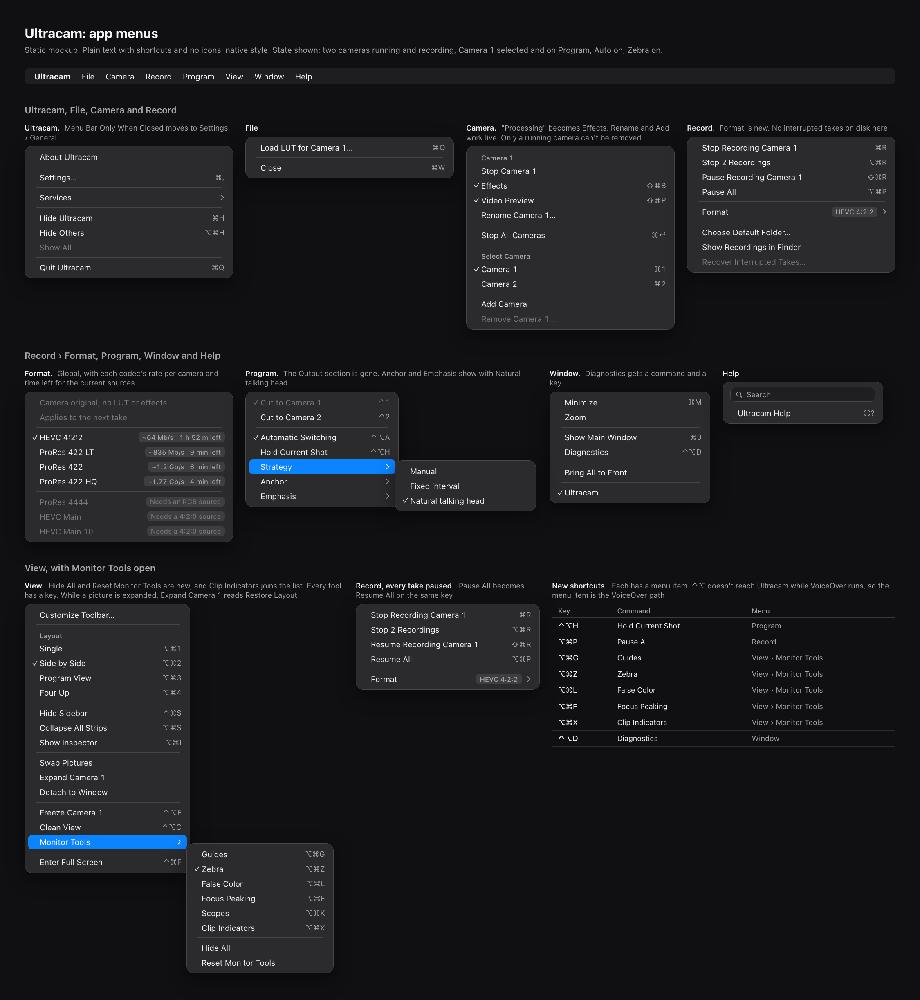
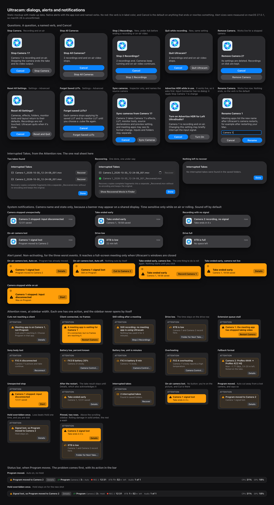

Program ViewTwo and four cameras, on-air loss, Auto, Hold, a pending cut, ISO and converted formats. Picture statesEvery overlay, tally and placeholder a camera picture can show. Strip statesEvery expanded and collapsed strip state, at its true widths.
Sidebar and toolbarThe session board, toolbar and status bar in each state, including problems. Monitor toolsThe tool bar at rest and on hover, each tool's popover, and detached monitors.
Status popoversWhat each status bar segment opens: recording, audio, Program and more.
InspectorPer-camera setup in signal order, stopped and running.
Menu barRunning a session with the window hidden.
App menusEvery menu in the menu bar, with shortcuts.
AlertsThe problem list, notifications, the alert panel and confirmation dialogs.